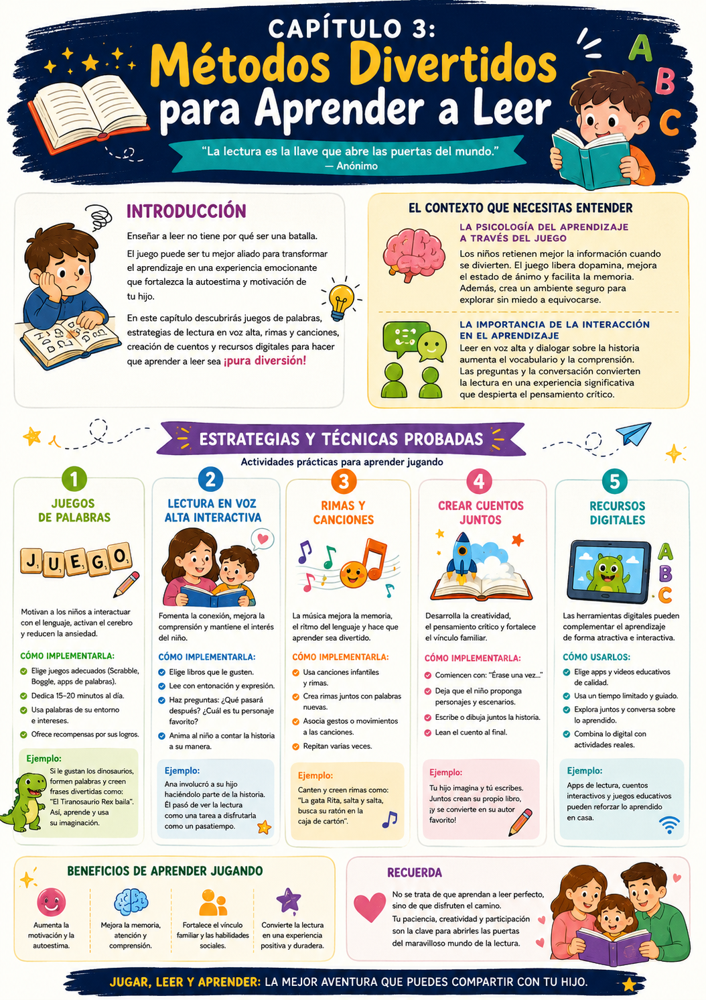

¿Tu hijo se frustra cuando intenta leer? ¿Lo ves tenso, con ganas de escapar del libro? La mayoría de las veces el problema no es el nene — es que la lectura se siente como una obligación y no como un juego.
Cuando los chicos se divierten, su cerebro libera dopamina — eso mejora el estado de ánimo, la memoria y el aprendizaje. La clave es convertir la lectura en una experiencia emocionante, no en una tarea.
La psicología del aprendizaje a través del juego
El 90% de los educadores coinciden en que el aprendizaje basado en juegos mejora la comprensión y el rendimiento. Los juegos crean un ambiente seguro donde el chico puede equivocarse sin miedo — y eso acelera el aprendizaje.
La importancia de la lectura en voz alta
Leer en voz alta con tu hijo aumenta su vocabulario y mejora la comprensión lectora. No se trata solo de que él lea — se trata de que dialoguen sobre la historia. Eso activa el pensamiento crítico y lo engancha con el relato.
✅ Antes de arrancar este capítulo

Tuki te dice:
No se trata de que aprendan a leer perfecto, sino de que disfruten el camino. Tu paciencia, creatividad y participación son la clave para abrirles las puertas al mundo de la lectura.
Los chicos retienen mejor la información cuando están involucrados emocionalmente en el proceso. Cuando se divierten, el cerebro libera dopamina — eso mejora el estado de ánimo, la memoria y el aprendizaje. El juego no es un recreo del aprendizaje: es el aprendizaje mismo.
Dopamina y memoria
Cuando el nene se divierte, su cerebro libera dopamina. Eso mejora la memoria y acelera el aprendizaje de forma natural.
Ambiente seguro
El juego crea un entorno donde equivocarse no da miedo. Sin miedo al error, el aprendizaje va mucho más rápido.
Interacción social
Jugar juntos fortalece la comunicación y la colaboración — habilidades que después aparecen en la lectura comprensiva.
Lo que dice la investigación
El 90% de los educadores coinciden en que el aprendizaje basado en juegos mejora la comprensión y el rendimiento académico. No es una moda — es lo que muestra la evidencia.
La lectura en voz alta es clave, pero lo que marca la diferencia es la interacción. Cuando vos y tu hijo participan juntos en la lectura, se generan diálogos que enriquecen toda la experiencia.
Ana, una mamá que lo probó, combinó la lectura en voz alta con preguntas interactivas. Al principio su hijo mostraba poco interés. Pero al involucrarlo en la historia — haciéndolo parte del relato — comenzó a mostrar entusiasmo inesperado. Pasó de ver la lectura como una tarea a disfrutarla como pasatiempo. Un cambio simple, una diferencia enorme.
Tuki te dice:
No se trata de que lean perfecto — se trata de que disfruten el camino. Tu participación es la clave para abrirles las puertas al mundo de la lectura.
Acá van los 5 métodos más efectivos para hacer que la lectura sea divertida. No tenés que usar todos — elegí el que mejor encaje con el estilo de tu hijo y empezá por ahí.
Juegos de palabras
Scrabble, Boggle, apps de palabras. Activan el cerebro de forma dinámica y reducen la ansiedad frente a la lectura.
Lectura en voz alta interactiva
Leés vos, él lee, hacen preguntas, actúan los personajes. La interacción es lo que hace que funcione.
Rimas y canciones
La música mejora la memoria y el ritmo del lenguaje. Las rimas ayudan a reconocer patrones fonéticos clave para la lectura.
Crear cuentos juntos
Empezás vos una historia, él la continúa. Desarrolla la narrativa, la comprensión y el amor por las palabras.
Juegos de palabras
15-20 min por día · Sin materiales especiales
Los juegos de palabras motivan a interactuar con el lenguaje y reducen la ansiedad frente a la lectura. El componente lúdico hace que el aprendizaje se dé sin que el nene lo note.
- 1Elegí un juego adecuado: Scrabble, Boggle, o apps de formación de palabras en la tablet.
- 2Dedicá 15-20 minutos al día — creá una rutina para que el nene lo espere con ganas.
- 3Usá palabras de su entorno o de temas que le gusten (animales, superhéroes, deportes).
- 4Introducí un sistema de recompensas simple: elegir la cena, ver un episodio extra de su serie.
Ejemplo concreto
Si le gustan los dinosaurios, formen palabras relacionadas con ellos y al final construyan una frase divertida: "El Tiranosaurio Rex baila". Esto activa la imaginación mientras practica lectura.
Lectura en voz alta interactiva
Todos los días · El método más poderoso
La lectura en voz alta fomenta la conexión entre la palabra escrita y su significado. Pero lo que marca la diferencia es la interacción — las preguntas y el diálogo sobre la historia.
- 1Elegí un libro que le interese — con ilustraciones coloridas si es más chico.
- 2Leé en voz alta con expresión. Detente y preguntá: "¿Qué crees que va a pasar?", "¿Cómo se siente este personaje?"
- 3Animalo a imitar las voces de los personajes — que sea él el lobo, el rey, el detective.
- 4Repetí pasajes favoritos. La repetición consolida el reconocimiento de palabras.
Ejemplo concreto
Si están leyendo un libro sobre un viaje en tren, vos sos el narrador y él es el tren haciendo ruidos de locomotora. Ridículo, divertido y efectivo — así se crean los recuerdos de lectura.
Rimas y canciones
Aprendizaje musical · Ideal para auditivos
La musicalidad de las palabras ayuda a reconocer patrones fonéticos — crucial para descifrar palabras nuevas. Además, las canciones son fáciles de recordar y se repiten naturalmente.
- 1Elegí canciones infantiles que le gusten y buscá la letra juntos.
- 2Cantá juntos siguiendo la letra con el dedo — eso conecta sonido con palabra escrita.
- 3Inventá movimientos o gestos para acompañar las palabras — suma el aprendizaje kinestésico.
- 4Animalo a inventar sus propias rimas — empezá vos con una palabra y que él encuentre otra que rime.
Crear cuentos juntos
Narrativa colaborativa · Desarrolla comprensión y creatividad
Crear historias juntos desarrolla la estructura narrativa de forma natural — el nene aprende que toda historia tiene inicio, nudo y desenlace sin que nadie se lo explique.
- 1Empezás vos con una oración disparadora: "Un día, un dragón decidió volar por la ciudad…"
- 2Tu hijo agrega la siguiente oración. Se turnan hasta terminar la historia.
- 3Al terminar, él ilustra las partes que más le gustaron.
- 4Leen el cuento completo juntos en voz alta, con voces y expresión.
Ejemplo concreto
Usá palabras o frases que rimen para hacer la historia más divertida — eso activa la conciencia fonética mientras crea.
Acá van las actividades concretas para aplicar hoy mismo. Tienen tiempo estimado, materiales y resultado esperado — todo lo que necesitás para arrancar sin vueltas.
🃏 El juego de las palabras perdidas
¿Para qué sirve? Fomenta el vocabulario y la comprensión de palabras en formato de juego activo.
- 1Escribí palabras en tarjetas — algunas que ya conoce y algunas nuevas.
- 2Esparcí las tarjetas por la habitación.
- 3Ponés el cronómetro en 2 minutos y él recoge todas las que puede.
- 4Por cada tarjeta que encuentre, tiene que leerla en voz alta y usarla en una oración.
Resultado: Aumenta el vocabulario y mejora la capacidad de formar oraciones.
📝 Cuento colaborativo
¿Para qué sirve? Desarrolla la narrativa, la comprensión lectora y la creatividad de forma conjunta.
- 1Empezás vos con una oración: "Un día, un dragón decidió volar por la ciudad…"
- 2Tu hijo agrega la siguiente oración. Se turnan hasta completar la historia.
- 3Al terminar, él ilustra las partes que más le gustaron.
- 4Leen el cuento juntos en voz alta, con voces y expresión.
Resultado: Mejora la comprensión de la estructura narrativa y el amor por crear historias.
🎵 Cantar y leer
¿Para qué sirve? Refuerza la lectura a través del ritmo y la música — ideal para chicos que resisten los libros.
- 1Elegí una canción popular que le guste a tu hijo.
- 2Buscá la letra juntos e imprimíla o mostránosla en pantalla.
- 3Canten juntos mientras él sigue la letra con el dedo.
- 4Seleccioná algunas palabras de la canción y pedile que las repita, las escriba o busque su significado.
La Búsqueda de Palabras
Ejercicio de movimiento · 30 minutos · Tarjetas y marcador
Una variante del juego de palabras perdidas pero con más movimiento — ideal para chicos kinestésicos que necesitan moverse para aprender.
- 1Escribí palabras clave de la semana en tarjetas de colores — nombres de objetos de la casa, palabras de un cuento que estén leyendo.
- 2Escondé las tarjetas en distintos lugares de la casa — no muy difíciles pero sí un desafío.
- 3Cada tarjeta que encuentra la lee en voz alta y la usa en una oración. Podés dar puntos por oración correcta.
- 4Al terminar, revisen juntos todas las palabras y hablen de su significado.
Resultado esperado: Practicó la lectura en contexto divertido y mejoró la comprensión usando las palabras en oraciones propias.
- 1No diferenciar niveles: cada chico tiene su ritmo. Evitá presionarlo para que lea como otro nene de su edad.
- 2Ignorar sus intereses: si no le gusta un método, buscá alternativas. El interés es el motor del aprendizaje.
- 3No hacer pausas: aprender a leer cansa. Programá descansos breves para mantener la concentración.
- 4Olvidar el refuerzo positivo: cada pequeño avance cuenta. Celebrá cada logro — eso construye confianza.
- 5Subestimar el juego: si te enfocás demasiado en los resultados, perdés la magia del momento. El juego ES el aprendizaje.
Tuki te dice:
¡Excelente! Ya tenés métodos y actividades concretas para esta semana. Mirá el resumen visual para fijar todo y después seguimos con la motivación en el Cap 4.
Esta infografía resume los métodos y actividades del capítulo. Guardala para tenerla a mano cuando necesites inspiración rápida.

Infografía · Capítulo 3 — Métodos Divertidos para Aprender a Leer
Tuki te dice:
¡Terminaste el Cap 3! En el Cap 4 vemos algo fundamental: cómo construir la motivación y la confianza de tu hijo para que quiera seguir leyendo solo.